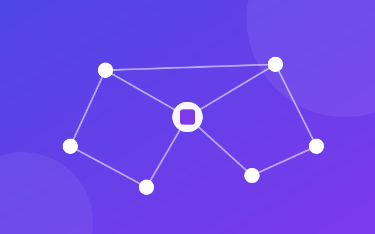
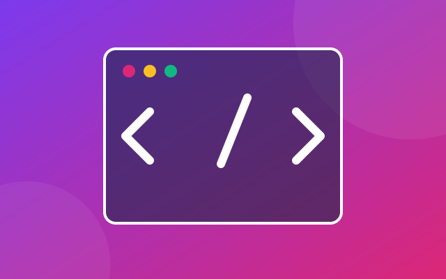
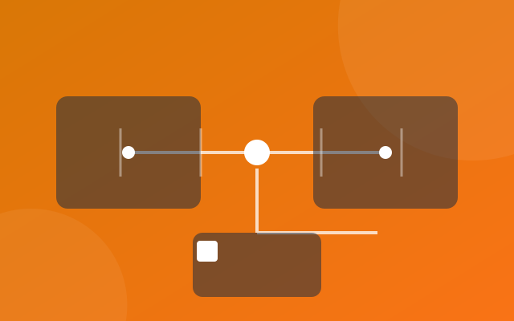
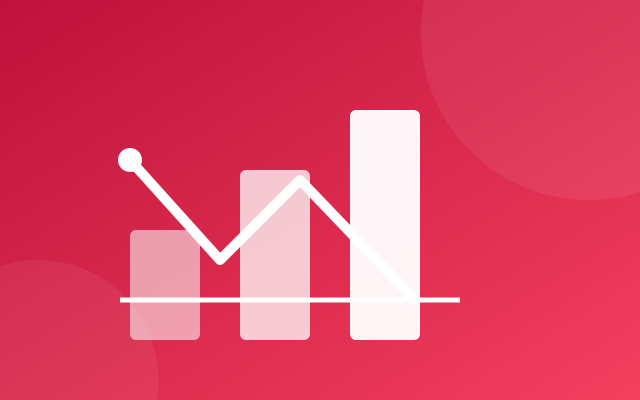

Корпорація «НОВАТЕК» працює за шістьма стратегічними напрямами. Кожен напрям
реалізує окремий департамент, що взаємодіє з відповідними державними органами
України у межах чинного законодавства.

Центр штучного інтелекту «НОВАТЕК AI»
1. Штучний інтелект та аналіз даних
Розробляємо моделі машинного навчання, системи обробки великих даних та
комп'ютерного зору для промисловості, медицини й державного управління.
Зв'язок із державними органами: Міністерство цифрової трансформації
України, Національний фонд досліджень України.
Хмарна платформа «NOVA Cloud»
2. Хмарні технології та інфраструктура
Експлуатуємо власну хмарну платформу та два дата-центри, надаємо послуги
IaaS, PaaS і резервного копіювання даних для бізнесу та держустанов.
Зв'язок із державними органами: Державна служба спеціального зв'язку та
захисту інформації України.
Центр кіберзахисту «NOVA Security»
3. Кібербезпека
Будуємо центри моніторингу та реагування (SOC), проводимо пентести,
аудити безпеки та захищаємо об'єкти критичної інформаційної інфраструктури.
Зв'язок із державними органами: Кіберполіція Національної поліції України,
Національний координаційний центр кібербезпеки при РНБО України.

Продуктовий департамент розробки
4. Розробка програмного забезпечення
Створюємо веб- та мобільні застосунки, корпоративні системи й державні
інформаційні системи: від аналітики вимог до підтримки на продакшені.
Зв'язок із державними органами: Міністерство цифрової трансформації
України, Міністерство освіти і науки України.

Департамент індустріального Інтернету речей
5. Інтернет речей та індустріальні рішення
Впроваджуємо розумні системи моніторингу енергооб'єктів, транспортних
мереж і виробництв на базі IoT-платформи власної розробки.
Зв'язок із державними органами: Міністерство енергетики України,
Міністерство розвитку громад та територій України.

Консалтингова практика «NOVA Consulting»
6. Цифрова трансформація бізнесу та консалтинг
Проводимо ІТ-аудит, будуємо дорожні карти цифровізації підприємств,
супроводжуємо впровадження ERP-систем та електронного документообігу.
Зв'язок із державними органами: Міністерство економіки України, Офіс з
розвитку підприємництва та експорту.